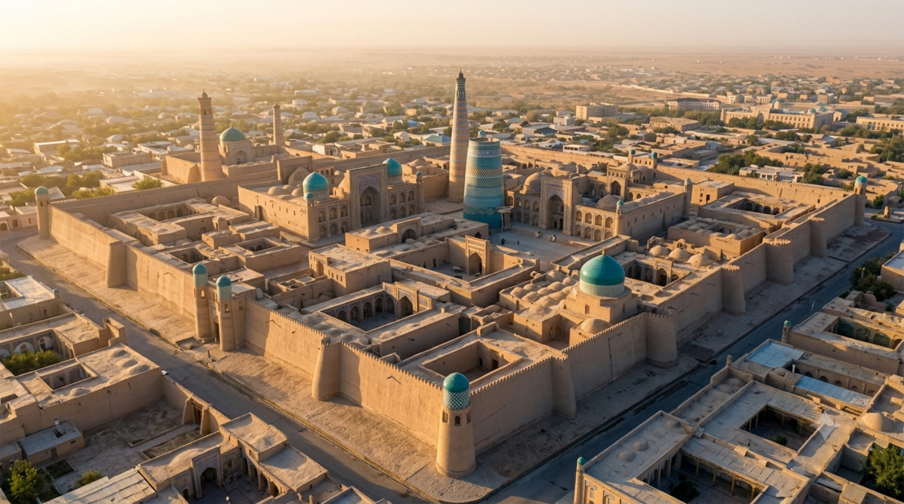

Aviation hub
Airports of Uzbekistan
Live flight intelligence, terminal guides, transfers and services for all eleven international gateways — one structured, trustworthy source.
Aviation hub
Live flight intelligence, terminal guides, transfers and services for all eleven international gateways — one structured, trustworthy source.
HUB · TASThe country's primary gateway and home of the national carrier.
 SKD
SKDA striking new terminal serving the Silk Road's crown jewel.
Gateway to the holy city and its 140+ monuments.

UGCThe closest gateway to the open-air museum of Khiva.
 NMA
NMAServing the fertile, densely populated Fergana Valley.
 NCU
NCUKarakalpakstan's hub, near the Aral Sea and Savitsky Museum.
Real-time
Find your flight
FAQPage schema